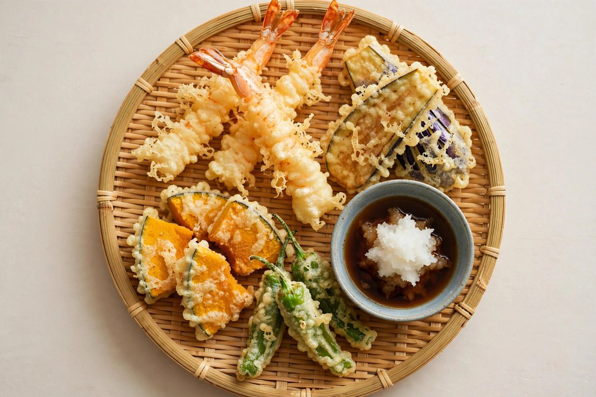

What is tempura?
Seafood and vegetables in an impossibly light, lacy batter — deep-fried so it shatters rather than crunches. Nothing like thick Western batter; good tempura barely feels fried at all.
How to eat it
- Dip lightly in tentsuyu （天つゆ) — a dashi-soy dipping sauce. Grated daikon is often floating in it; that's intentional.
- Eat each piece immediately — tempura waits for no one. Steam makes it soggy within minutes.
- A pinch of salt instead of sauce works beautifully on shrimp — many shops offer both.
Tendon vs tempura-mori
- 天丼 Tendon — tempura over rice in a bowl, drizzled with sweet sauce. Often ¥800–1,000. The budget king.
- 天ぷら盛り合わせ Tempura moriawase — assorted tempura on a plate with dipping sauce. More refined, pricier.
- 天ぷら定食 Teishoku — tempura set with rice, miso soup, pickles.
What you'll find inside
えび ebi (shrimp) is the star. Also common: きす kisu (whiting fish), なす nasu (eggplant), かぼちゃ kabocha (pumpkin), ししとう shishito (mild peppers), れんこん renkon (lotus root).
Allergens and dietary check: is tempura safe for you?
What a typical tempura contains. Recipes vary by shop, so use this to know what to ask, then confirm with the staff. Tap an allergen for its Japanese restaurant card.
| Allergen / diet | Contains? | Why |
|---|---|---|
| Wheat / gluten | Yes | The batter is wheat flour; the dipping sauce has soy sauce. |
| Egg | Often | Many batters include egg. |
| Shellfish | Often | Shrimp tempura is the classic, fried in the same oil as everything else. |
| Fish / dashi | Yes | Fish pieces, and the tentsuyu dip is bonito dashi. |
| Sesame | Sometimes | Traditional shops fry in sesame oil or a blend. |
| Soy | Yes | Soy sauce in the dipping sauce. |
| Dairy | Rarely | Not a usual ingredient. |
| Vegetarian? | Partly | Vegetable pieces, but shared oil with shrimp and fish dashi dip. Use salt. |
Several allergies? Build one card with our printable Japanese allergy card. Also see halal and vegetarian and vegan cards. This is travel information, not medical advice.
Common questions
Is tempura greasy?
Good tempura isn't. The batter is thin and the oil is very hot, so pieces come out crisp and light. If it's greasy, the oil wasn't hot enough.
What's the white stuff in the dipping sauce?
Grated daikon radish — it cuts the richness. Stir it in.
Is tempura gluten-free?
No. Tempura batter is wheat flour, and the dipping sauce contains soy sauce. Some specialist restaurants can make rice-flour tempura on request.
Does tempura have egg?
Often. Many tempura batters are made with flour, cold water and egg yolk. Ask “衣に卵は入っていますか？”.
Is vegetable tempura safe with a shrimp allergy?
Not reliably. Vegetables and shrimp are usually fried in the same oil. Ask for fresh oil, or avoid tempura shops if your allergy is severe.